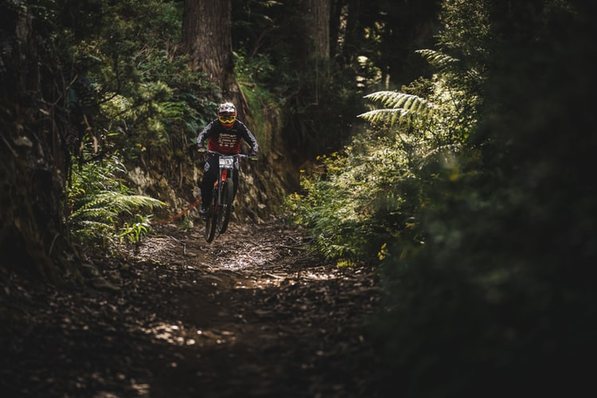

- 단기목표
- 중기목표
- 장기목표

- 취미 활동을 꾸준히 한다.
(홈페이지만들기,그림그리기,자전거타기,바이크타기,스노보드타기,저글링하기,책읽기,영화보기,등산하기,노래하기,기타치기,글쓰기,등등.)
- 경제적 자유를 위하여 월수입 1천만원을 목표로 한다.(꾸준한 실력을 쌓으면 가능하다.)
- 영어 수준을 일상생활회화 이상의 수준으로 높인다.(향후 승희가 유학가면 따라간다.)
- 일어 수준을 간단한 여행객 회화 수준으로 높인다.(향후 인접국을 자주간다.)
- 중국어도 접근 시도한다.(대국은 사라지지 않는다.)